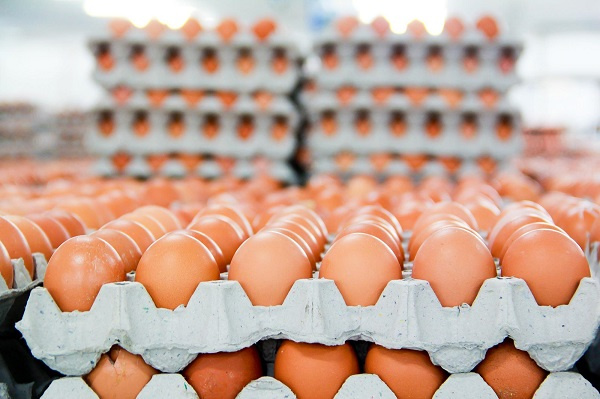
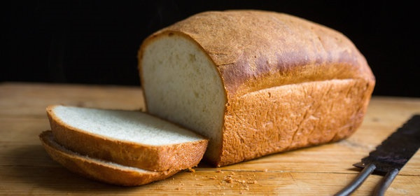
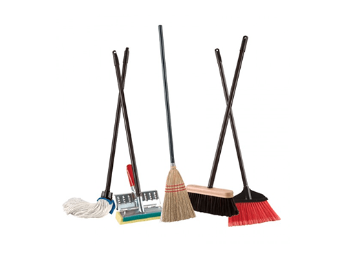
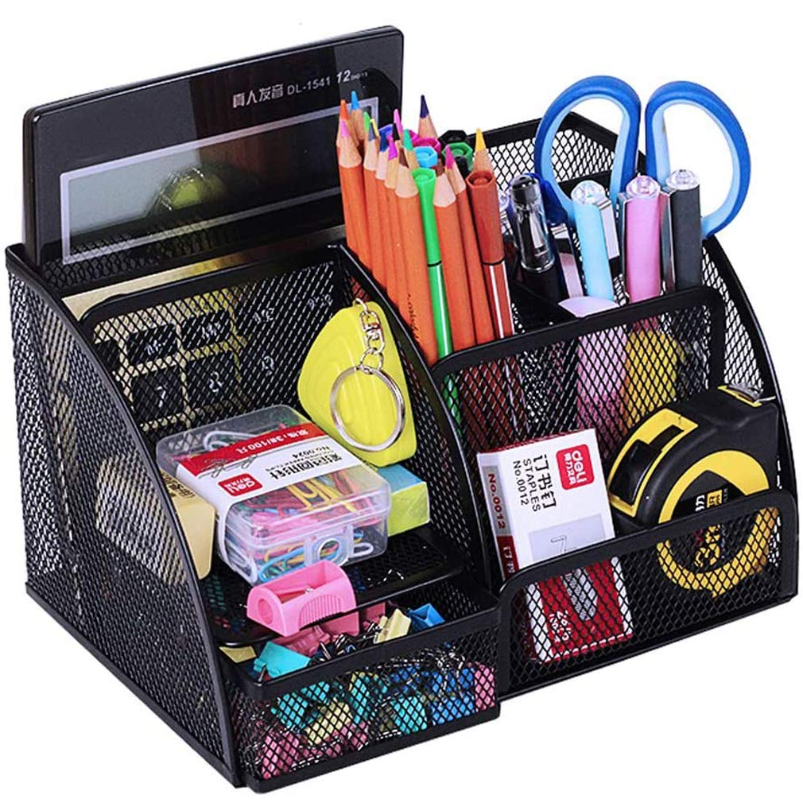
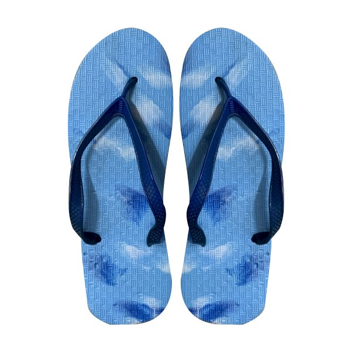

Local foodstuff
Ask us about today's selection.
Good things for your home
Browse a selection of the kinds of products available at M.A. Victory Market in Oyibi. Product availability can change, so call or WhatsApp to check before visiting.
From the local kitchen
Everyday ingredients and foodstuff for home cooking.
Ask us about today's selection.
Seasonal items may vary.
Ask in store for availability.
For your pantry
The everyday basics that help keep your kitchen stocked.

A pantry staple for everyday meals.

Check with us for current availability.

Ask about the selection in store.
All the little essentials
Useful everyday items, drinks, and more in one convenient stop.

A range of drinks and refreshments.
Ask about available sizes.

Practical household necessities.

Everyday stationery and more.

Ask us about other useful items.
Visit us to see what is in stock.
Looking for something specific? Ask us on WhatsApp